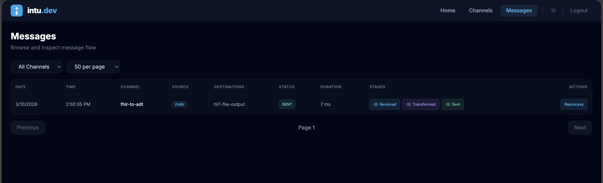

Stop fighting legacy GUI-based engines. Build, version, and deploy healthcare integration pipelines using YAML and TypeScript.
AI-friendly by design.
Every other part of your stack is defined as code—infrastructure, CI/CD, containers. Why are healthcare pipelines still configured in GUIs and stored in databases?
A channel is a folder with a YAML config, a TypeScript transformer, and an optional validator. Everything lives in your Git repo.
id: fhir-to-adt enabled: true listener: type: fhir fhir: port: 8082 base_path: /fhir/r4 version: R4 resources: [Patient] transformer: runtime: node entrypoint: transformer.ts destinations: - hl7-file-output
Declarative YAML: what connects to what, which protocol, which port.
import type { Patient } from "fhir/r4"; import HL7 from "hl7-standard"; export function transform(msg: unknown): string { const p = msg as Patient; const hl7 = new HL7(); hl7.createSegment("MSH"); hl7.set("MSH.9", { "MSH.9.1": "ADT", "MSH.9.2": "A08" }); hl7.createSegment("PID"); hl7.set("PID.5", { "PID.5.1": p.name?.[0]?.family, "PID.5.2": p.name?.[0]?.given?.join(" ") }); return hl7.build(); }
Pure TypeScript: full npm ecosystem, type safety, IDE support.
Scaffold a project with sample channels, npm deps, and Docker config.
Add channels. Each one is a folder with YAML + TypeScript.
Run the engine. Auto-compiles TypeScript. Hot-reloads on changes.
Not a prototype. A production-grade engine with enterprise features—all open source.
Every pipeline is plain text files. Branch, diff, review, and merge your integration logic the same way you ship application code.
Structured YAML + typed TypeScript are the formats LLMs generate best. Use AI assistants to create, modify, and debug your pipelines.
Go binary runtime with a pre-loaded Node.js worker pool. Modules are cached in V8 at startup. Transform execution is measured in microseconds.
Memory, Postgres, or S3 backends. Store messages at each pipeline stage for audit and replay. Configurable per-channel: none, status-only, or full content.
Configurable retry with fixed, linear, or exponential backoff per destination. Failed messages route to a DLQ for inspection and reprocessing.
Preprocessor, Validator, Source Filter, Transformer, per-destination Filter & Transformer, Response Transformer, Postprocessor. All optional except the transformer.
OpenTelemetry traces and metrics, Prometheus endpoint, and log transports for CloudWatch, Datadog, Sumo Logic, Elasticsearch, and file.
Redis-based coordination with channel partitioning, message deduplication, and persistent destination queues. Run standalone or as a cluster.
HashiCorp Vault, AWS Secrets Manager, and GCP Secret Manager. LDAP and OIDC for dashboard authentication. RBAC and audit logging.
Sources define where messages come from. Destinations define where they go. Mix and match across protocols.
Every stage is optional except the transformer. Per-destination filters and transformers let you customize payloads for each output independently.
Base config in intu.yaml. Override per environment with intu.dev.yaml or intu.prod.yaml. Environment variables expand with ${VAR} syntax.
Storage mode, log transports, secrets provider, cluster config, and connector settings all vary by profile. One codebase, every environment.
runtime: mode: cluster message_storage: driver: postgres mode: full logging: transports: - type: datadog datadog: api_key: ${DD_API_KEY}
Monitor channels, browse messages, inspect payloads, and reprocess errors—all from a web dashboard included with every intu serve.

Live status, throughput, and error rates for every channel at a glance.
Search, filter, and inspect messages at every pipeline stage.
Reprocess errored messages and inspect raw payloads for fast debugging.
Mirth Connect went proprietary in March 2025. intu is the modern, open-source alternative built by someone with 15 years of healthcare interoperability experience.
Import your existing Mirth channel XML exports directly. Generates channel.yaml + transformer.ts automatically.
Same pipeline stages, same connector types, same healthcare protocols. Modern TypeScript instead of Rhino JS. Git instead of a database.